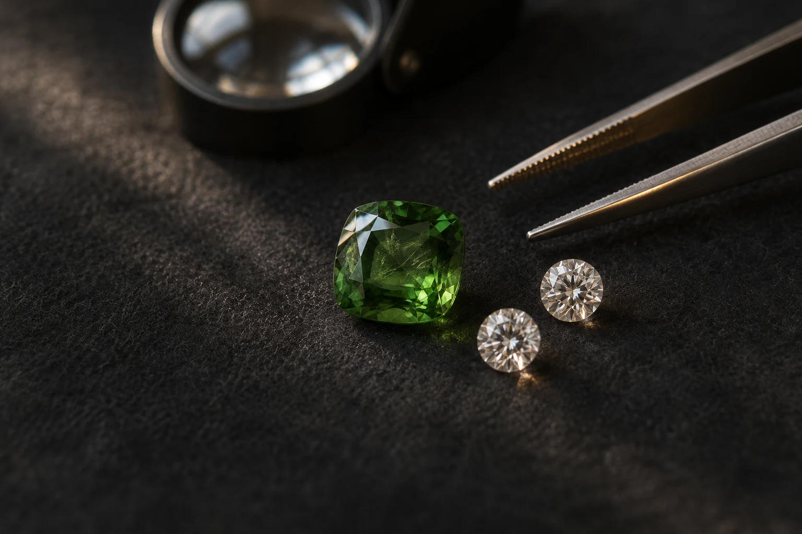

Edelsteinservice
Edelsteine und Diamanten
Ein Ring mit einem unbekannten Stein oder eine geerbte Sammlung wirft andere Fragen auf als reines Altgold. Gemeinsam klären wir, welche Prüfung für Ihre Stücke infrage kommt.

Der erste Blick
Was haben Sie vor sich?
Eine Untersuchung ist für lose Steine ebenso möglich wie für gefasste Steine in einem Schmuckstück. Für eine erste Rückmeldung helfen ein scharfes Foto, die Anzahl, die ungefähren Maße und vorhandene Berichte. Das Karatgewicht können Sie ergänzen, wenn es bekannt ist.
Bei Diamanten spielen vier Merkmale zusammen. Das Karatgewicht beschreibt die Masse, die Farbe den Farbton, die Reinheit die sichtbaren Merkmale im Stein und der Schliff seine Formgebung und Lichtwirkung.
Prüfung und Kosten
Identifizierung oder Laborbericht?
Oft genügt zunächst eine Identifizierung. Wenn ein unabhängiger Bericht für Ihren Stein sinnvoll erscheint, können wir die Zertifizierung beim International Gemological Institute (IGI) in Antwerpen besprechen.
Ein vorhandener Laborbericht dokumentiert die Merkmale des Steins. Auf dieser Grundlage lassen sich sein Marktwert und mögliche nächste Schritte besser einschätzen.
Preise für die Identifizierung
| Prüfung | Preis |
|---|---|
| 1 bis 10 lose Steine | 10 € je Stein |
| 11 bis 20 lose Steine | 8 € je Stein |
| Gefasste Steine | 15 € je Schmuckstück |
Für das IGI nennt die Preisliste zusätzlich 100 € für den versicherten Hin- und Rücktransport. Die Gebühren für die Zertifizierung richten sich nach Art und Gewicht des Steins.
Alle Leistungen und Preise (PDF)Sammlungen und Nachlässe
Wie geht es nach der Prüfung weiter?
Bei einer Sammlung können wir einen möglichen Ankauf des Konvoluts besprechen. Bei einem einzelnen Stein kommen je nach Stück auch ein Verkauf oder die Verarbeitung zu neuem Schmuck infrage. Erzählen Sie mir, was Sie mit Ihren Steinen vorhaben.
Über meine Steine sprechen